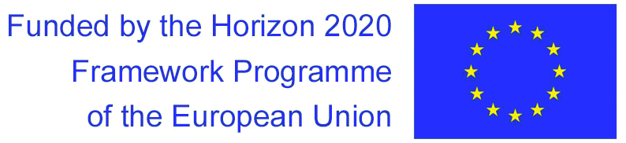

The seismic wavefield carries the imprint of material it crossed. We now understand that seismic wavefields alter the material when they pass through it and that these changes are measurable. This is important, because the dynamic response of Earth's material directly affects our societies: geomaterial alterations are associated with many natural hazards, such as volcanic eruptions, landslides, earthquakes, and the structural health of civil structures such as bridges and buildings. Traditional seismic sensors - global and regional networks of seismometers - provide us with high temporal resolution, but sparse spatial resolution.
Right now, new sensing technologies (fiber-optic cables (DAS), large-N arrays, rotation sensors) are emerging that can give us much more detailed spatial information about how the seismic wavefield behaves. This means that we can study changes in local material properties, and investigate complex behavior of materials as they deform under small strain. These sensing technologies are reaching a level of maturity where they can be incorporated into common seismological observation practice.
For this new era of seismological instrumentation and observation fundamentally new skills need to be developed. In SPIN, we will train the next generation of scientists to develop novel views about the dynamic behaviour of Earth materials, and in particular how to observe them with the revolutionary new sensing systems at hand. It is currently enigmatic how to combine these sensor types to optimize resolution power. This research and training will impact the way we understand solid Earth processes, how we interrogate the Earth's geomechanical behavior, and the way we forecast natural hazards.

SPIN is a European project funded by the European Union's Horizon 2020 research and innovation programme under the Marie Skłodowska-Curie grant agreement № 955515. The project is a Marie Skłodowska-Curie Innovative Training Network (MSCA ITN); a joint research training and doctoral programme.